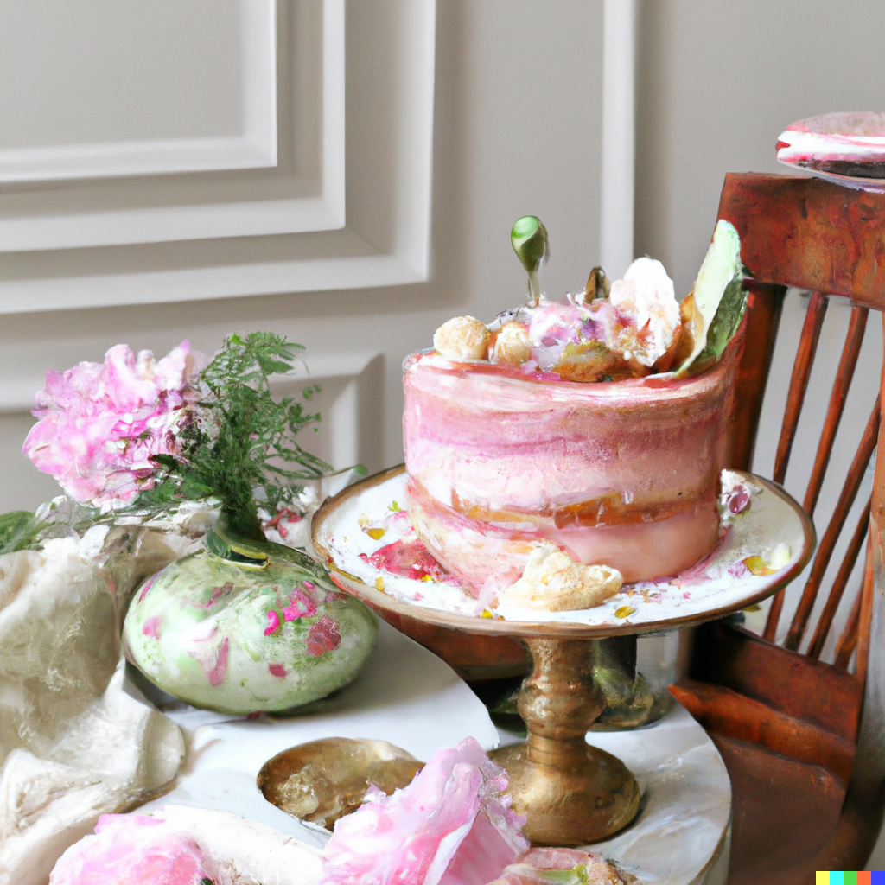

Gateau Victoire

Ingredients:
- 8 ounces (225g) bittersweet chocolate, finely chopped
- 1 cup (225g) unsalted butter, cubed
- 1 cup (200g) granulated sugar
- 6 large eggs
- 1/4 cup (30g) all-purpose flour
- Pinch of salt
- Powdered sugar, for dusting
Instructions
- Preheat your oven to 325°F (165°C). Grease a round cake pan and line the bottom with parchment paper.
- In a heatproof bowl set over a saucepan of simmering water, melt the bittersweet chocolate and butter together, stirring occasionally until smooth. Remove from heat and let it cool slightly.
- In a separate mixing bowl, whisk the granulated sugar and eggs together until well combined.
- Slowly pour the melted chocolate mixture into the egg mixture while whisking continuously. Mix until smooth and well incorporated.
- Sift the all-purpose flour and salt into the chocolate batter. Gently fold the dry ingredients into the batter until just combined, ensuring not to overmix.
- Pour the batter into the prepared cake pan, spreading it evenly.
- Bake in the preheated oven for about 35-40 minutes or until the cake is set and a toothpick inserted into the center comes out with a few moist crumbs.
- Remove the cake from the oven and let it cool in the pan for about 10 minutes. Then, transfer it to a wire rack to cool completely.
- Once cooled, dust the Gateau Victoire with powdered sugar for an elegant finish.
- Serve the cake slices on individual plates and enjoy the indulgent and velvety texture of Gateau Victoire.